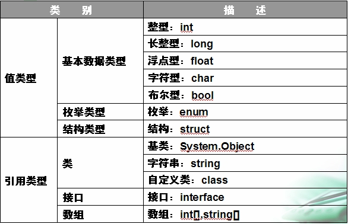
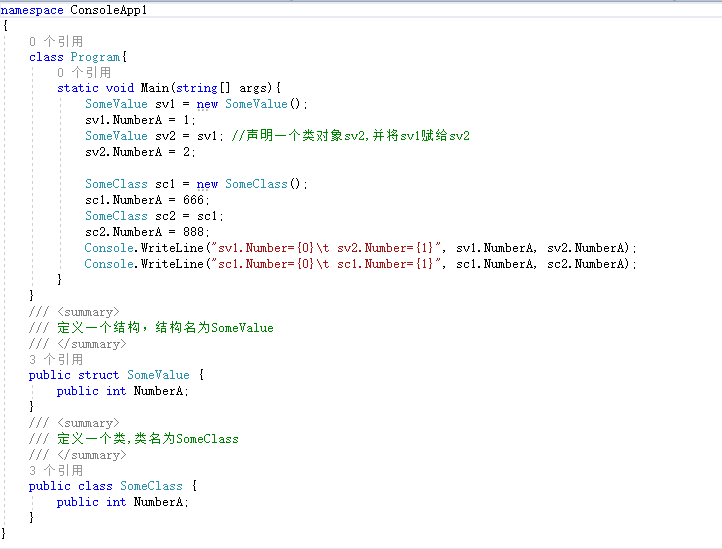
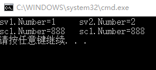
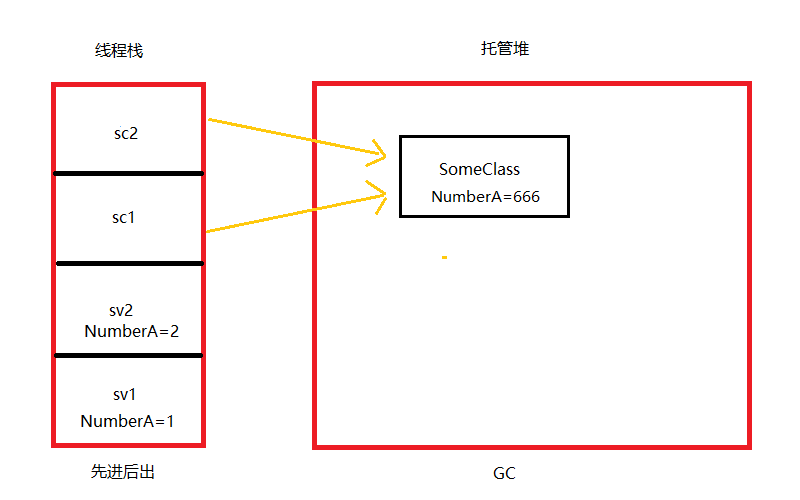

☞ 堆是无序的，是一片不连续的内存域，由用户自己来控制和释放，如果用户自己不释放的话，当内存达到一定的特定值时或程序运行结束时，通过垃圾回收器（GC）来回收。
☞ 是程序运行期间动态分配的内存空间，你可以根据程序的运行情况确定要分配的堆内存的大小。
☞ 栈是有顺序的，是一片连续的内存域，保持着先进后出的原则，由系统自动分配和维护。
☞ 是编译期间就分配好的内存空间，因此代码中必须就栈的大小有明确的定义。
即， 所分配的内存是在一块连续的内存区域内．当我们声明变量时，那么编译器会自动接着当前栈区的结尾来分配内存。

☞ 值类型变量声明后，无论是否已经赋值，编译器都会为其分配内存。
☞ 引用类型当声明一个类时，只会在栈中分配一小块内存用于存放引用地址，此时并没有为其分配堆上的空间。当类实例化时，分配内存空间，并把堆上空间的地址保存到栈上分配的小块空间中。
☞ 值类型的实例通常是在线程栈上分配的（静态分配），但是在某些情形下可以存储在堆中。
☞ 引用类型的对象总是在进程堆中分配（动态分配）。

运行结果


从图中我们可以看出，两个引用类型sc1,sc2都指向同一个托管堆上的空间，所以最后一个指向的会覆盖掉前面的。
而结构是值类型，虽然使用sv2=sv1，把sv1对象赋值给sv2，但是它会在线程栈中分配一个独立的空间，当修改某一个对象的值的时候，不会影响到另一个对象
所以，值类型和引用类型的区别就是：
1、它们存储的位置不一样
2、如果是引用类型，当两个对象指向同一个地方，修改某一个的时候，其它对象的值会发生改变
内容参考来自文章：
作者:遥远的Ta